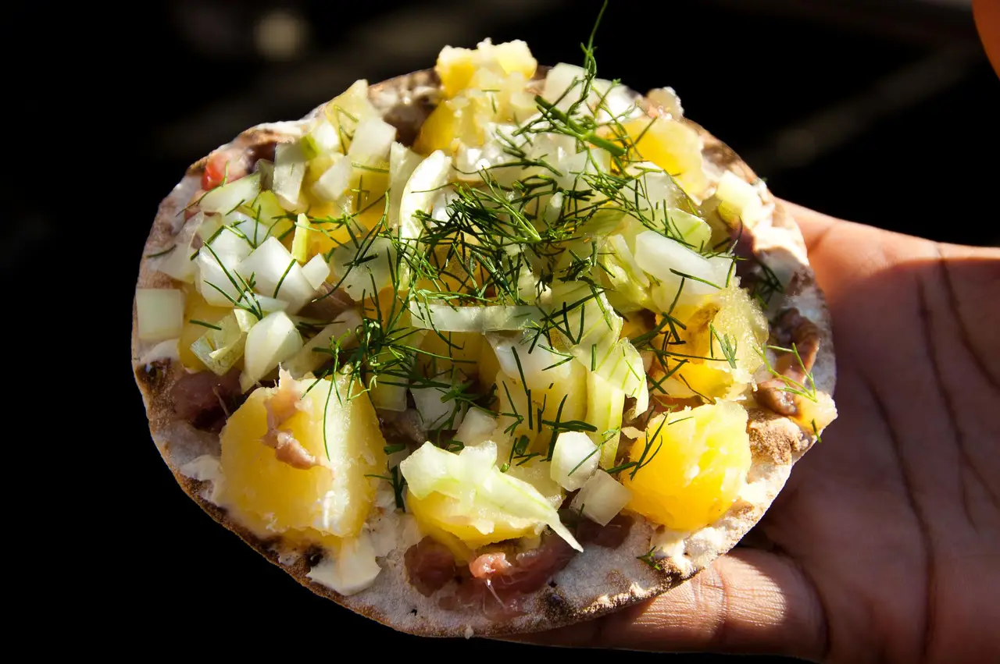

- food -
If you're looking for unique food experiences in Sweden, you’ll be spoiled for choice. Here are ten culinary highlights – from regional delicacies and traditional Swedish food to modern fine dining – that should feature on anyone's foodie bucket list.
A dish of international repute, ‘surströmming’ is a must on anyone's foodie bucket list. The smelly Baltic herring is salted and fermented in tins and served with flat bread (‘tunnbröd’), sliced boiled potato and chopped onion. Wash it down with beer and the high spirits that come with the occasion, which typically takes place outdoors – for obvious reasons – at the end of August. To immerse yourself in the tradition, check out the world's largest surströmming festival in Alfta, Hälsingland, or visit the High Coast islands of Ulvön – the delicacy's birthplace.
Sweden’s right to roam policy invites anyone to enjoy Mother Nature’s edible gifts, throughout the year. You're even allowed to cook your harvest over an open fire in nature at certain times a year. So, set off with basket in hand, perhaps with an experienced guide by your side.